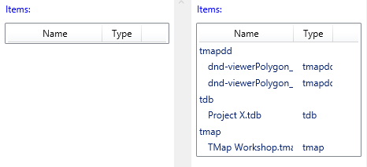

For the most part the resources declared within a Catel UserControl behave the exact same as resources defined in the standard
UserControl. However because of the way the Catel UserControl operates (see [UserControl Under the hood]({{< relref "catel-mvvm/views/xaml/advanced/usercontrol-under-the-hood.md" >}})) any bindings performed inside a Resource will not be found at runtime (example CollectionViewSource Source) . The solution is to declare the resource inside an element within the UserControl, not at the UserControl level. Example below:
Given this simple Model and ViewModel (Catel.Fody used for parameter declaration)
public class DataSource : ModelBase
{
public int Id { get; set; }
public string URI { get; set; }
public string DataSourceType { get; set; }
public string Description { get; set; }
public string ShortURI
{
get
{
if (string.IsNullOrEmpty(URI)) return null;
Uri uri = new System.Uri(URI);
if (uri.IsFile)
{
return System.IO.Path.GetFileName(uri.LocalPath);
}
return URI;
}
}
}
public class DocumentViewModel : ViewModelBase
{
public DocumentViewModel(ICommandManager commandManager)
{
ProjectDataSources = new FastObservableCollection<DataSource>();
ProjectDataSources.Add(new DataSource() { Id = 1, URI = "file:///D:/src/TAnaylze/Data/DataSources/dnd-viewerPolygon_AoI-Intergranular_porosity.json", DataSourceType = "tmapdd", Description = "From TMap DragDrop" });
ProjectDataSources.Add(new DataSource() { Id = 2, URI = "file:///D:/src/TAnaylze/Data/DataSources/dnd-viewerPolygon_AoI-Intergranular_porosity.json", DataSourceType = "tmapdd" });
ProjectDataSources.Add(new DataSource() { Id = 3, URI = "file:///D:/src/TAnaylze/Data/DataSources/Project X.tdb", DataSourceType = "tdb", Description = "Project X.tdb" });
ProjectDataSources.Add(new DataSource() { Id = 4, URI = "file:///D:/src/TAnaylze/Data/DataSources/TMap Workshop.tmap", DataSourceType = "tmap", Description = "TMap Workshop.tmap" });
}
public FastObservableCollection<DataSource> ProjectDataSources { get; set; }
}
and this View:
View
<catel:UserControl x:Class="Catel.Examples.WPF.Commanding.Views.DocumentView"
xmlns="http://schemas.microsoft.com/winfx/2006/xaml/presentation"
xmlns:x="http://schemas.microsoft.com/winfx/2006/xaml"
xmlns:sys="clr-namespace:System;assembly=mscorlib"
xmlns:catel="http://schemas.catelproject.com">
<catel:UserControl.Resources>
<ResourceDictionary>
<!-- The Resource ListViewTitle will be found at run time -->
<sys:String x:Key="ListViewTitle">Items:</sys:String>
<!-- The Resource DataSourceGroup will be found but the binding will not work. -->
<CollectionViewSource x:Key="DataSourceGroup"
Source="{Binding ProjectDataSources}" IsLiveSortingRequested="True" IsLiveGroupingRequested="True">
<CollectionViewSource.GroupDescriptions>
<PropertyGroupDescription PropertyName="DataSourceType" />
</CollectionViewSource.GroupDescriptions>
</CollectionViewSource>
</ResourceDictionary>
</catel:UserControl.Resources>
<Grid>
<Grid.ColumnDefinitions>
<ColumnDefinition Width="*" />
<ColumnDefinition Width="5" />
<ColumnDefinition Width="*" />
</Grid.ColumnDefinitions>
<ScrollViewer Grid.Column="0">
<StackPanel>
<StackPanel.Resources>
</StackPanel.Resources>
<Label Foreground="Blue" Margin="5,5,5,0" Content="{StaticResource ListViewTitle}"></Label>
<ListView Name="_datasourcelv1" ItemsSource="{Binding Source={StaticResource DataSourceGroup}}">
<ListView.View>
<GridView>
<GridViewColumn Header="Name" Width="120" DisplayMemberBinding="{Binding ShortURI}" />
<GridViewColumn Header="Type" Width="50" DisplayMemberBinding="{Binding DataSourceType}" />
</GridView>
</ListView.View>
<ListView.GroupStyle>
<GroupStyle>
<GroupStyle.HeaderTemplate>
<DataTemplate>
<TextBlock Text="{Binding Name}"/>
</DataTemplate>
</GroupStyle.HeaderTemplate>
</GroupStyle>
</ListView.GroupStyle>
</ListView>
</StackPanel>
</ScrollViewer>
<GridSplitter Grid.Column="1" Width="5" HorizontalAlignment="Stretch" />
<ScrollViewer Grid.Column="2">
<StackPanel>
<StackPanel.Resources>
<!-- The solution is to embed the resource inside the UserControl, this way the binding is within the runtime Visual Tree. -->
<CollectionViewSource x:Key="DataSourceGroup2"
Source="{Binding ProjectDataSources}" IsLiveSortingRequested="True" IsLiveGroupingRequested="True">
<CollectionViewSource.GroupDescriptions>
<PropertyGroupDescription PropertyName="DataSourceType" />
</CollectionViewSource.GroupDescriptions>
</CollectionViewSource>
</StackPanel.Resources>
<Label Foreground="Blue" Margin="5,5,5,0" Content="{StaticResource ListViewTitle}"></Label>
<ListView Name="_datasourcelv2" ItemsSource="{Binding Source={StaticResource DataSourceGroup2}}">
<ListView.View>
<GridView>
<GridViewColumn Header="Name" Width="120" DisplayMemberBinding="{Binding ShortURI}" />
<GridViewColumn Header="Type" Width="50" DisplayMemberBinding="{Binding DataSourceType}" />
</GridView>
</ListView.View>
<ListView.GroupStyle>
<GroupStyle>
<GroupStyle.HeaderTemplate>
<DataTemplate>
<TextBlock Text="{Binding Name}"/>
</DataTemplate>
</GroupStyle.HeaderTemplate>
</GroupStyle>
</ListView.GroupStyle>
</ListView>
</StackPanel>
</ScrollViewer>
</Grid>
</catel:UserControl>
Will produce this at runtime:

The ListView on the left is not populated because the binding is not found and will produce this error:
System.Windows.Data Error: 40 : BindingExpression path error: 'ProjectDataSources' property not found on 'object' ''MainWindowViewModel' (HashCode=-1500006600)'. BindingExpression:Path=ProjectDataSources; DataItem='MainWindowViewModel' (HashCode=-1500006600); target element is 'CollectionViewSource' (HashCode=5965360); target property is 'Source' (type 'Object')
While the ListView on the right has the correct content due to the proper binding. Further discussion on Stack Overflow.